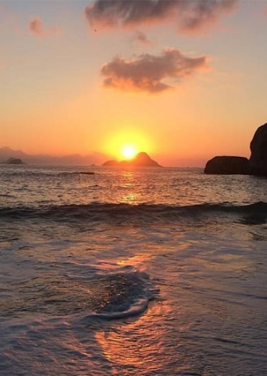
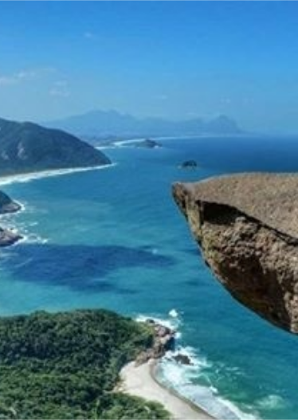

A Pedra da Gávea e sua misteriosa “cabeça de índio” sempre despertaram o interesse e a curiosidade de todos e conosco não foi diferente. Mas como dizem, no pain… no gain. Para chegar à tão esperada vista e curtir toda a paisagem é preciso passar antes por uma trilha pesada entre muitas raízes e pedras e com direito a escalada em paredões.

Praia do Perigoso
Rio de janeiro - RJ
Se, em sua próxima viagem, você deseja visitar um destino marcante, precisa conhecer a Praia do Perigoso. Distante dos centros urbanos e repleta de paisagens intocadas, essa praia é um destino perfeito para quem ama natureza. Ideal para uma viagem com amigos, você certamente vai gostar de conhecê-la.

Pedra do Telégrafo
Rio de janeiro - RJ
Famosa por suas fotos “arriscadas”, a Pedra do Telégrafo, localizada no Parque Estadual da Pedra Branca, em Guaratiba, no Rio de Janeiro, tem recebido muitos trilheiros e curiosos. Afinal, será que as pessoas são realmente loucas em tirar fotos assim?